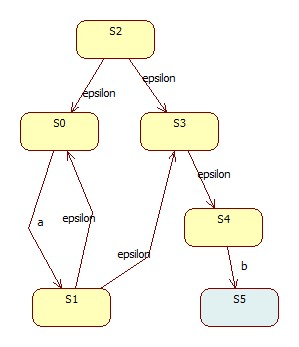
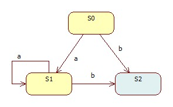

预备知识
预备知识/为什么写
毫无疑问，这属于重复造轮子的行为
但也是区分“程序员”和“只是写代码的人”的基本标准之一
是词法分析的基础，为实现编程语言打基础
顺带一提，公认的标准有三个，亦称“三大浪漫”
预备知识/术语
预备知识/乔姆斯基层次结构
| 文法 | 语言 | 自动机 | 产生式规则 |
|---|---|---|---|
| 0-型 | 递归可枚举语言 | 图灵机 | 无限制 |
| 1-型 | 上下文相关语言 | 线性有界非确定图灵机 | αAβ -> αγβ |
| 2-型 | 上下文无关语言 | 非确定下推自动机 | A -> γ |
| 3-型 | 正规语言 | 有限状态自动机 | A -> aB A -> a |
预备知识/NFA
非确定有穷自动机
NFA = { I, S, f(), S', s }
举例来说，对于a*b这个正则来说：
|--------------------------------------------|
| | a | b | epsilon |
|--------------------------------------------|
| >S2 | - | - | S0,S3, |
| S0 | S1, | - | - |
| S3 | - | - | S4, |
| S1 | - | - | S0,S3, |
| S4 | - | {S5}, | - |
| {S5} | - | - | - |
|--------------------------------------------|

预备知识/DFA
确定有穷自动机
和NFA的区别？
必要性：减小开销
对于每一个NFA必定有对应的DFA。证明:3.3.3 NFA与DFA的等价性
|---------------------------------|
| | a | b |
|---------------------------------|
| >S0 | S1, | {S2}, |
| S1 | S1, | {S2}, |
| {S2} | - | - |
|---------------------------------|

预备知识/算法
正则->NFA：Thompson's construction algorithm
NFA->DFA：Powerset construction
DFA最小化：Hopcroft's algorithm
构造
构造/表达式验证和优化
验证：输入合法性检查和修整
后缀表示法
构造/构造NFA
Thompson's construction algorithm
三种基本运算的定义
其余运算都可以从上述三种中推导出，例如
验证和修整后的正则，遍历并生成States。以star为例：
expA = nfaStack.pop()
exp = NfaExp()
expA.stateTo.addNextState(SYM_EPSILON, expA.stateFrom)
expA.stateTo.addNextState(SYM_EPSILON, exp.stateTo)
exp.stateFrom.addNextState(SYM_EPSILON, expA.stateFrom)
exp.stateFrom.addNextState(SYM_EPSILON, exp.stateTo)
nfaStack.append(exp)
构造/构造DFA
EXPSPACE问题，复杂度O(2p(n))
基本思想：消除epsilon转换
概念：epsilon闭包
具体步骤
构造/输入匹配
输入驱动的匹配
遍历输入字符，应用到状态机
贪婪模式的处理：找到第一个匹配即返回
通配符的处理：直接走到状态机下一个State
改进?
参考资料